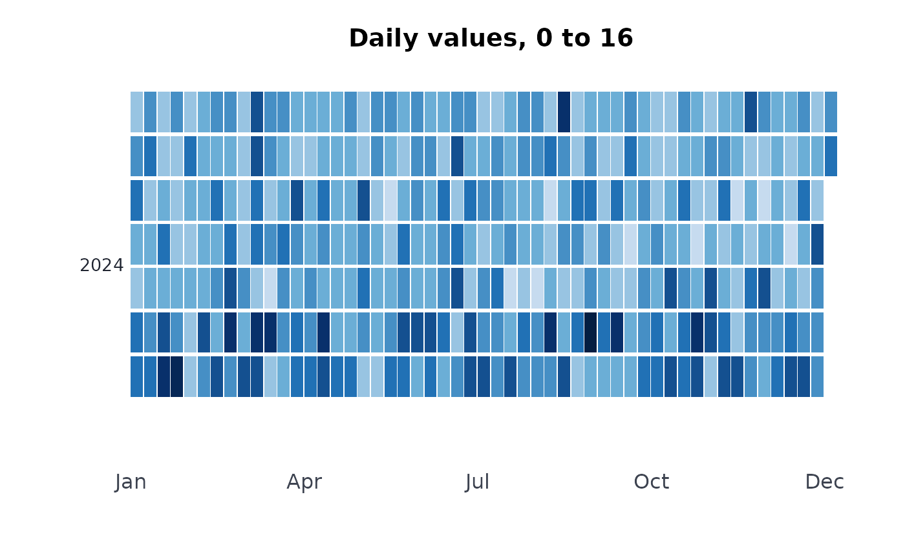
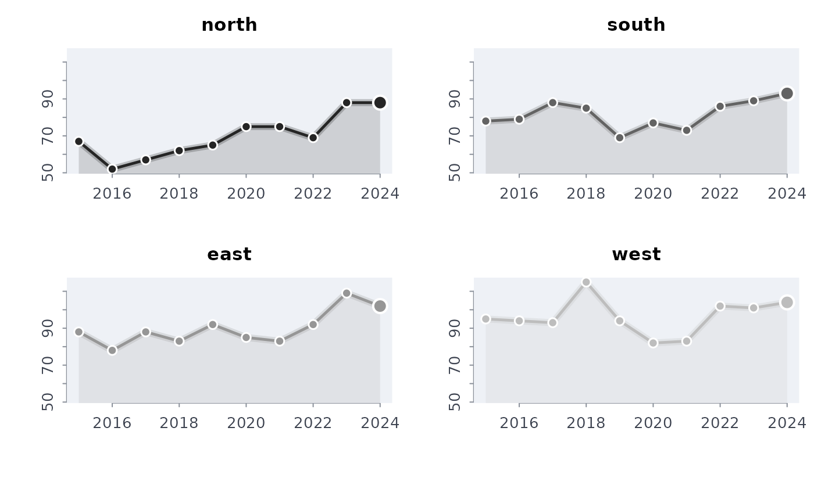
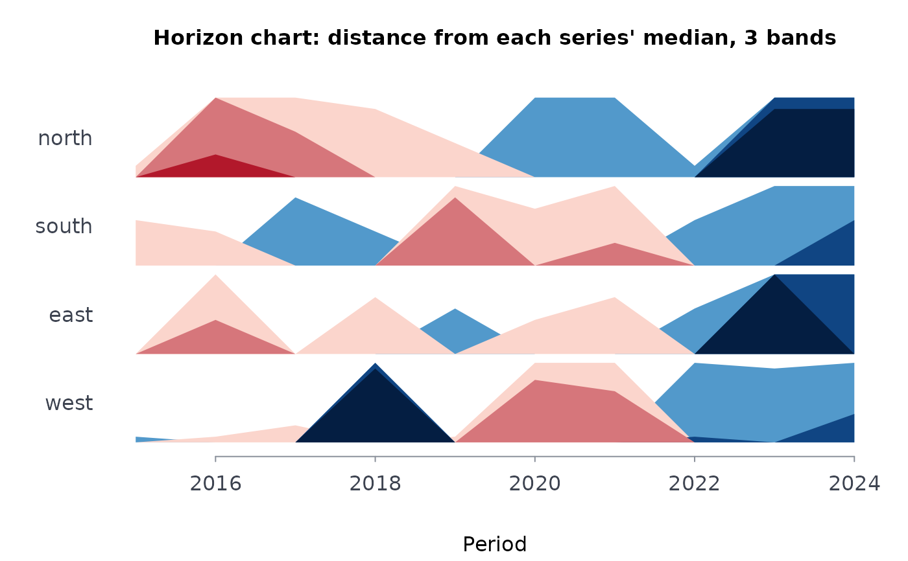
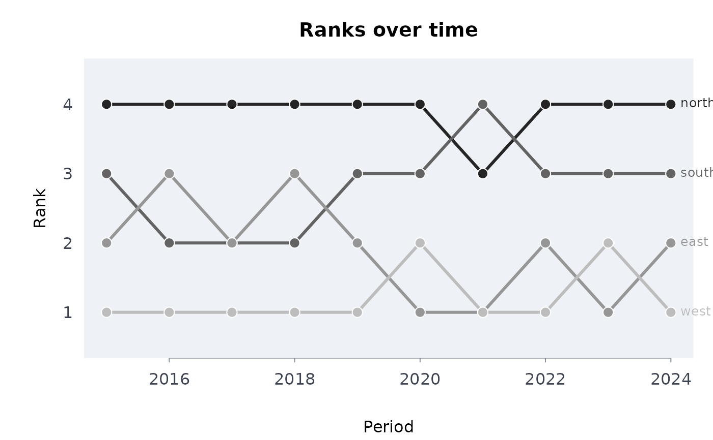

Base-graphics plots in the house style for a value observed by period, for one series or many:
plotcal()a calendar heatmap of a daily series: one tile per day, weeks across and weekdays down, one block per year.
plothrz()a horizon chart: each series in its own thin row, its deviation from its own median folded into
bandsshaded bands, above in blue and below in red, so many series fit in little height.plotsm()small multiples: one panel per series on a shared scale.
plotbump()a bump chart: the rank of each series in each period (1 = largest), so changes of order stand out.
Usage
plotcal(x, y, ..., main = NULL, col = NULL, pal = NULL)
plothrz(
y,
prd,
grp = NULL,
bands = 3L,
...,
main = NULL,
col = NULL,
pal = NULL
)
plotsm(y, prd, grp = NULL, ..., main = NULL, col = NULL, pal = NULL)
plotbump(y, prd, grp, desc = TRUE, ..., main = NULL, col = NULL, pal = NULL)Arguments
- x
Dates (a
Dateor textas.Date()reads) forplotcal().- y
Numeric vector of values.
- ...
Further arguments to the first
plot()call.- main, col, pal
The title, colours overriding the palette, and a
blpal()name.- prd
Vector of periods, one per value (numbers, dates or text in order of appearance).
- grp
Vector of series names, one per value, or
NULLfor one series.- bands
Whole number, default 3: the bands of a horizon chart.
- desc
Logical, default
TRUE: rank 1 is the largest value (FALSE: the smallest).
Value
The data drawn, invisibly: for plotcal() the days (date,
year, week, wday, y), for the others the
series (grp, prd, y, and rank for
plotbump(), band for plothrz()).
Examples
set.seed(5)
days <- seq(as.Date("2024-01-01"), as.Date("2024-12-31"), by = "day")
plotcal(days, stats::rpois(length(days), 5 + 3 * (format(days, "%u") > "5")))

d <- expand.grid(year = 2015:2024, area = c("north", "south", "east", "west"))
d$n <- stats::rpois(nrow(d), 50 + 10 * as.integer(d$area) + 2 * (d$year - 2015))
plotsm(d$n, d$year, d$area)

plothrz(d$n, d$year, d$area)

plotbump(d$n, d$year, d$area)

try(plotcal("not a date", 1))
#> Error : plotcal: `x` must be dates, one per value of the numeric `y`